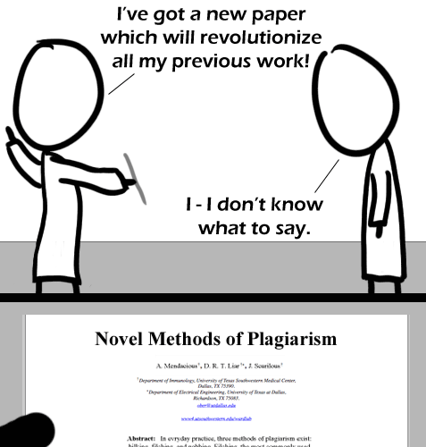

Comic JK 466
When I Feel Like It
⇤
<
?
>
⇥

⇤
<
?
>
⇥
Forum
.
RSS
.
Digg
.
Facebook
.
Reddit
.
Twitter
.
Stumbleupon
Enter your thoughts on this comic here. Please, no plagiarising, trolling, or phreaking. I think Nicolai Ivanovich Lobachevsky wrote this paper almost 200 years ago... > ^stole this is the best evar Let's try to transcribe the text here: Novel Methods of Plagiarism A. Mendacious, D. R. T. Liar, J. Scurilous Department of Immunology, University of Texas Southwestern Medical Center Dallas, TX 75390. Department of Electrical Engineering, University of Texas at Dallas. Richardson, TX 75083 cbcc@txdallas.edu www4.xxxxxxxxxxx.edu/xxxxlab Abstract: In evryday [sic] practice, three methods of plagiarism exist: bilbles, fibbles, and gobbles. Fibbles, the most commonly used >bilking, filching? >>and robbing? Immunology AND electrical engineering! >It's a cross-disciplinary project. They electrocute sick people for laughs. >>Or maybe they inoculate people being electrocuted? >>>The process of electrocution renders one immune to many conditions including some of the more acute forms of death. Side effects to electroinnoculation include burning in the bosom, uncontrollable shaking, tingling and a funeral. >>>>...but a positive side effect is tooth lightning :D >>>>>I beleive my ass is shaking uncontrollably, like it might fall off. XD Cupcakes By Sergeant Sprinkles: World's Greatest Party Clown Edited by Edinpony WARNING: This fanfiction is incredibly gory, and may ruin your appreciation of a certain My Little Pony character as well as the titular baked goods. READ AT YOUR OWN RISK! < ... deleted gawdaweful pony smut ... >